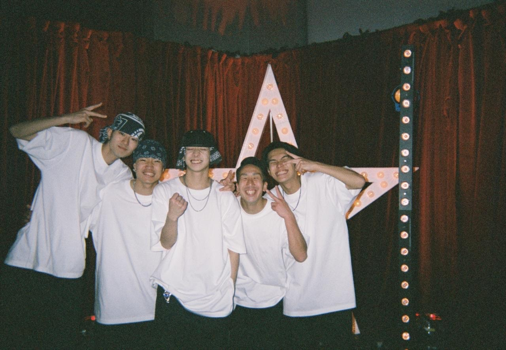
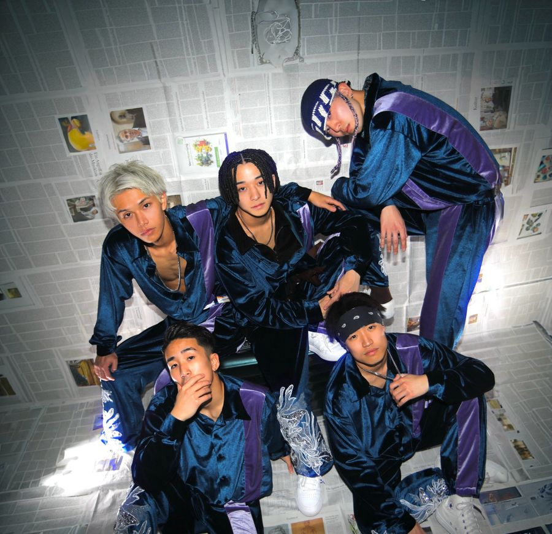
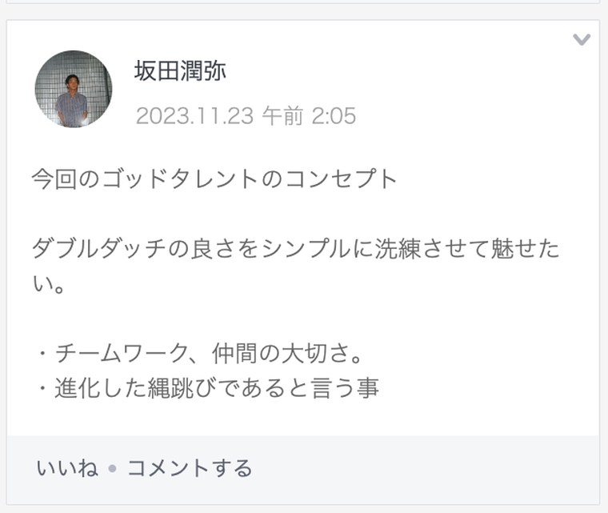
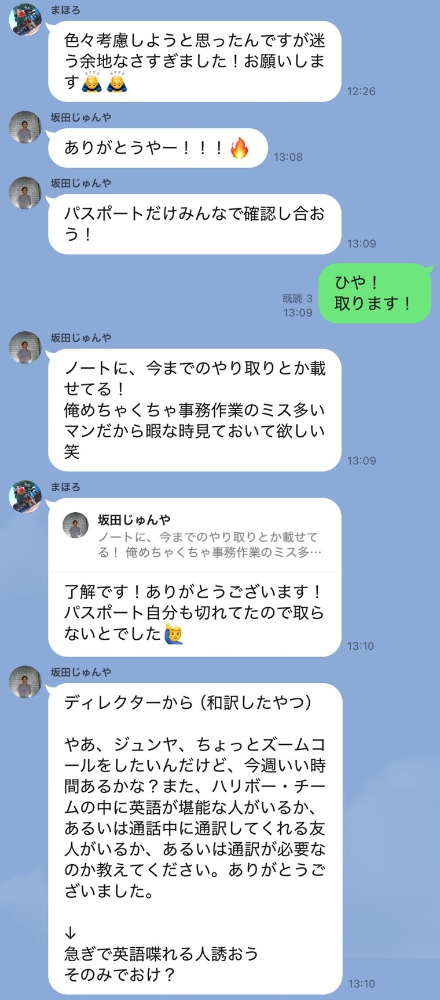
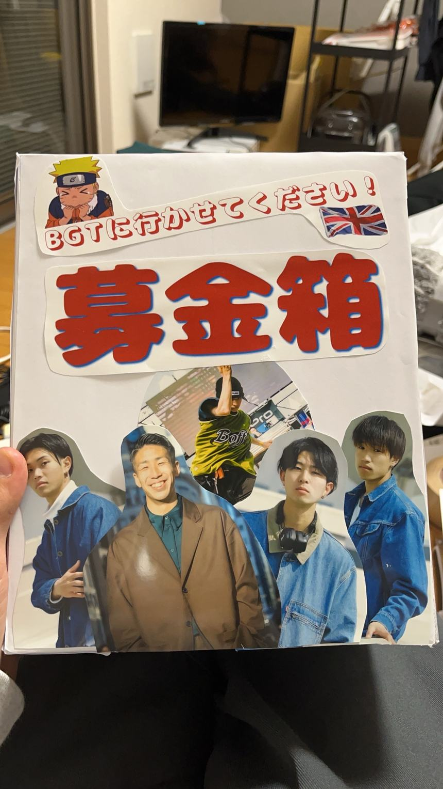
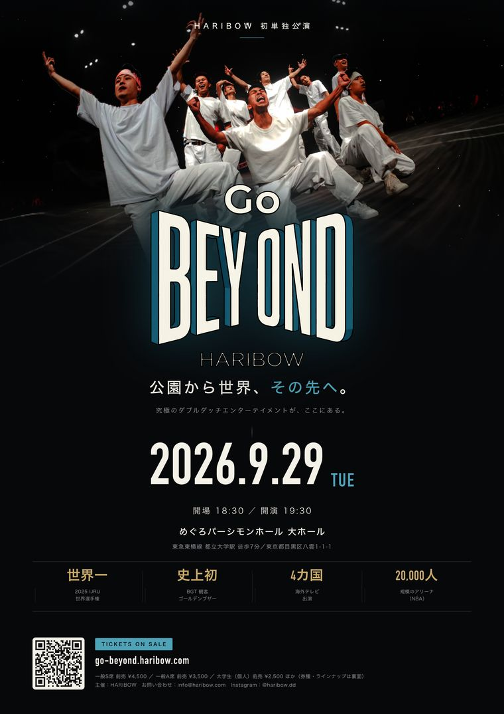

Britain's Got Talent 2024 — 5人が話した4日間
誰も、あの瞬間を覚えていない
史上初の観客ゴールデンブザーを受けた5人が、満席でも赤字の公演をやろうとしている
ブザーが鳴った瞬間のことを、5人とも覚えていない。
2024年、ブリテンズ・ゴット・タレント。チームHARIBOWが跳んでいる途中で、客席が「ゴールデンブザーを押してくれ」と声を揃えはじめた。審査員はもう全員、ゴールデンブザーを押す権利を使い終えていた。そのあとで、観客がブザーを押させている。
観客が押させたゴールデンブザーは、番組10年以上の歴史で初めてだった。5人はそのまま決勝に進んでいる。
日本人がこの番組の決勝に立ったのは、2023年のとにかく明るい安村氏に続いて2組目。安村氏は準決勝で敗れたあとワイルドカード枠で決勝に進んでいる。決勝進出が、いまのところ日本人の最高到達点で、HARIBOWはそこに並んだ。
その夜の収録で、あの瞬間について彼らが思い出せたのは、これだけだった。
その5人がいま、満席になっても赤字になる公演をやろうとしている。
チケットは、まだ埋まっていない。だから彼らは、友達にひとりずつ連絡を入れている。そこで、こういう話が出た。
近い人ほど、誘うのが慎重になっちゃう。……結構、来てほしいからな。
いちばん近い友達ほど、誘えない。断られるのが分かるからではなく、来てほしいからだ。
これは、その連絡をしている最中の5人に、95分話してもらった記録である。

先に、彼らが何をやっているのかを書いておく。
ダブルダッチは、2本の縄を向かい合った2人が回し、その中で跳ぶ。速い場面では、縄は1秒に8回まわる。1回あたり125ミリ秒。人が無意識にまばたきをする時間と、ほぼ同じだ。
まばたき1回のあいだに、縄が1本、足の下を通り抜けている。
それを、メンバーは平均して10年やっている。
この記事に出てくるのは、その5人だ。
5人のうち4人は、部活で始めている。海野鷹幸と加藤周平が長野、松澤竜介が千葉、井端真秀が神奈川。
坂田潤弥だけが違う。高校の仲間4人に部活をやめさせて、近所の公園で始めた。そのときつけたチーム名が pawn だった。チェスでいちばん弱い駒のことだ。盤の端まで行くと、別の駒に成る。意味は知っていた、と本人は言う。
いまは海野が株式会社HARIBOWの代表を務め、潤弥が作品と演出をまとめている。
いわゆるプロのスポーツ選手とは、経路が違う。スカウトも、強化指定も、育成組織もない。大学のダブルダッチサークルで同じ代になった仲間が、卒業してもばらけずに、そのまま会社を立てた。
その延長で、イギリスのオーディション番組に出た。その延長で、世界一になった。
誘ったのは潤弥と海野で、竜介・真秀・周平は後輩にあたる。
2026年9月3日の夜。横浜に5人が集まった。机の上には、質問を書いたカードが伏せてある。誰も進行役をやらない。引いた人が答える。
9月29日、めぐろパーシモンホール大ホールで、HARIBOWは初めての単独公演をやる。タイトルは「Go BEYOND」。その26日前の夜だった。
第一章 誰も覚えていない
最初に引かれたのは、あの瞬間のカードだった。
僕自身、情報弱者すぎて何も知らなかった。なのにウキウキして出てて。ゴールデンブザーって決勝とかで押されるもんだと思ってたから、予選で押されるとは思ってなくて。
英語わからないながら、ジャッジのコメントを聞いて、その観客の反応で、ゴールデンブザーを押されたんだっていうのを、そこで気づいたかも。
押されて、意味が分かんなかった。押された後にいろいろ調べ始めて、えっ、これ実はやばくね、俺らすごくね、みたいな。
押したのは、客席にいた2人の子供だった。審査員サイモン・コーウェルの息子エリックと、審査員アマンダ・ホールデンの娘ホリー。審査員のブザーは全員が使い切っていて、会場が「押して」の合唱になったとき、サイモンが2人に「君たちが押しなさい」と声をかけている。
価値が分かっていなかったので、心配していたことも的外れだった。
（俺らには）子供が乱入して勝手に押した、みたいな感じで見えて。英語わかんないから、これ多分、全カットでなくなるんだろうなと思ってた。
消えるどころではなかった。
（再生回数を）合わせたら2,500万。あの単発だけでも1,000万ぐらい再生されてんじゃん。
2,500万回。ただし、そこに自分が映っているかどうかは、別の話だった。
俺、映ってなくて悲しいわと思って。動画が上がった後に、全然映ってねえ、ってなった瞬間はありました。
収録の終盤、同じ話題のカードがもう一度引かれた。今度は、記憶のズレを聞くカードだった。
ズレている、という答えは出なかった。出てきたのは、そもそも覚えていない、だった。
ぶっちゃけ、喜んどくか、？って気持ちで。何が起きてるかさっぱりすぎて。
俺、あれ（＝海外の番組）一発目だから、本当に記憶なくて。
審査員が英語喋ってる時に必死すぎて。とりあえず、わかんないけど喜んどこうと思ってたら、なんかパーンってなって。子供が走ってきたのも正直見えてなくて、急にパーンってなったから。
周平には、押される瞬間が見えていなかった。
子どもがブザーを押すところは自分からは見えていなくて、いきなりゴールデンブザーが鳴りました。最初は「え、何？」ってびっくりしていて、周りを見ると潤弥さんあたりが喜んでいたので、「え、マジ？」となって、とりあえず一緒に「イエーイ！」と喜びました。
そのあと、確信するまでに時間がかかっている。
スタッフや会場関係者の人たちもちょっと慌てていたし、お客さんも一気に「イエーイ！」という感じではなかったので、「これ大丈夫？ 本当にゴールデンブザーなの？ 間違えて押したとかじゃない？」と半信半疑でした。
そのあと徐々に「どうやら本当らしい」と分かってきて、最後にサイモンたちがもう一度話すターンで「準決勝で待ってるよ」というようなことを言われたときに、「あ、マジなんだ」と確信に変わりました。
ブザーが鳴った直後に、誰と目が合ったか。
正直、はっきりとは覚えていないです。ただ、隣にいたのがうんのさんだったと思うので、多分うんのさんです。
ロンドンにいた4日で、いちばんくだらなかった時間は何かと、あとで竜介に聞いた。返ってきたのは、本番の日の朝だった。
鳥の真似をしながら会場へ向かう、当日の朝。
その数時間後に、番組史上初のブザーが鳴る。
当日は、何時間も待たされている。楽屋で待ち、昼寝をして、名前を呼ばれて舞台袖まで来た。そこから先、トイレに行くタイミングが分からないまま、幕が開いている。
あと、本当にトイレ行きたかった。めっちゃ待たされたじゃん。本番始まるって言われてから、トイレ行くタイミングが分かんなくて。舞台袖に来た時に行きたかったけど、ここでトイレなんて言い出せなくて。
（当日は）昼寝してた。ほぼ練習してないよね。
縄の中で4分跳び、審査員の英語を聞き取れないまま笑い、客席が声を揃えはじめ、ブザーが鳴った。その4分のあいだ、頭にあったのはトイレだった。
番組史上初の瞬間に立っていた本人の記憶が、それなのだ。
彼らはあの日、自分たちに何が起きているのか分かっていなかった。価値は、あとから知った。
第二章 大晦日の電話
BGTの話が来る前に、井端真秀は負けている。
2023年の秋。真秀は大学3年生だった。ダブルダッチ・デライト East。学生の大会で、勝ち上がれば12月にニューヨークのアポロシアターへ行ける。8位までが敗者復活に残り、次のコマがあった。
Auro-ra は、10位だった。
結果は会場で発表される。選手席に座ったまま、聞いている。最初に思ったのは、やりきった、だった。会場を出るまで、泣いていた。
次に縄を触ったのは、10日後。やめるつもりはない。3年生で、4年生まで続けるつもりだった。
11月27日にあのグループが作られたのは、そのあとだ。
そんな最中の、ある練習の帰り道だった。突然、潤弥から電話がかかってくる。
では、なぜこの5人だったのか。
番組から声がかかったのは、坂田潤弥ひとりだった。Instagramに上げた動画が拡散し、それを見たBGTがオファーを出した。だから潤弥には、どのチームで出るかを選ぶ余地があった。
当時のHARIBOWは、大学のダブルダッチサークルで同じ代が揃った、それだけのチームだった。会社にする気も、長く続ける気もない。一回イベントに出るだけのつもりで集まっていた。
なんで潤弥がHARIBOWで出るんだ、ってなったんだっけ。最初にオファー来た時にさ、チーム選べるじゃん。なんでロアーじゃないの、って。
（番組側と）ミーティングがあって。HARIBOWのコンテストの映像と、もうひとつの映像。この2つがいい、って言われて。で、ストリート感がほしい、みたいな。
自分自身も、ダブルダッチの魅力を一番シンプルな形で見せたいと思っていた。テーマも技も衣装も、シンプルイズベストな感じで。

誘われた側にはどう見えていたのか。その場でLINEが遡られた。
11月27日。（潤弥たちに）いきなりグループ作られて、今ミーティング入ってほしい、って。要件なしでミーティングに招集されて。
11月27日。要件を告げられないまま作られたグループに入れられ、そのまま通話がはじまる。話は終わらない。駅のホームに立ったまま、電車を1本、また1本と見送っている。
アポロが消えてから、いくらも経っていない。
ワクワクして、ミーティングにのめり込みすぎて。駅のホームでミーティングしてたのに終電逃して、PayPayでお金送ってもらう、という。
気づいたときには、終電が出ていた。帰る金がなくて、送ってもらっている。
この通話で潤弥が伝えたのは、ゴッドタレントに出演できるかもしれない、ということだけだった。
グループに追加されたのは11時59分。真秀が返事をしたのは、12時26分だった。
色々考慮しようと思ったんですが、迷う余地なさすぎました。お願いします。
27分だった。
次に呼び出されたのは、大晦日だった。
大晦日に3人で電話して。大事な話あるんですよね、穴開けちゃうんですけど、みたいなのを、（誘う側の）2人が言った。
5月の何日も開けといてほしいです、って言われたけど。俺も就職してんだよ、いきなりやろ、渋いなと思ったけど……釣られた。
BGTの予選は2月で、そのときは5人とも大学生だった。開けてくれと頼まれた5月は、準決勝と決勝の月にあたる。そして5月には、潤弥と竜介が働きはじめている。入ったばかりの勤め先を、何日も空ける話だった。
電話終わったら、行くわ、って言った気がする。
断る余地は、一応つくられてはいた。
（潤弥たちに）最初に聞かれて、断らなすぎて、絶対行きます、みたいに言ったときに、言い直されて。考える時間を設けられた記憶がある。もう一回自分（の気持ち）を聞いて、断ってもいい、って。
俺は結構明確に、出なくてもいいかな、みたいな気持ちがあって。（潤弥たちの）挑戦と、何十万も背負う責任も含めて。……でも、それでも行くわ、って。この勢いが大事だなと思って。
電話中に、なんか行きたくなった。
就職が決まっていた。何十万も自分で出す。予選で落ちるかもしれない。それでも全員が行った。
そして、その予選がどういうものかを、彼らは分かっていなかった。誘った潤弥自身が、間違えて伝えていた。
最初は体育館でオーディションをすると思っていて、それをみんなに伝えていた。そこで勝ち上がったらテレビに出演できると思っていたので、いけると思った。
体育館の前で、（番組の）スタッフの前で披露すると思っていた。
体育館で予選をやると思ってたので、いけると思ってた。
ある程度は通用すると思っていた。でも、本当にゴールデンブザーが取れるとは思ってなかった。
ゴールデンブザーを取れるとは思っていなかったけど、何かしらの形で爪痕を残したり、かますことはできると思っていました。海外の人にはどうしたらウケるかを考えて、デモも作りました。通用するかどうかを強く考えていたというより、自分たちを見せに行く、という感覚の方が強かったです。
潤弥にとっては、そのオーディションに出ること自体が到達点だった。テレビに出るのはその先の話で、まだ手が届く場所にはないと思っていた。
行くと決めてから出発するまでに、これは何も分かっていないな、と思ったことはあったか。3人に聞いた。
なかった。
なかった。
会場、移動手段、練習場所。
ほとんど何も分かっていなかったです。誘ってくれた潤弥さんたちが基本的には理解していると思っていたんですけど、実際は誰も分かっていないことがたくさんありました。
誘われた側は、誘った側が分かっていると思っていた。誘った側も、分かっていなかった。
真秀が加わった直後、潤弥がグループに書いたのは、これだった。
パスポートだけみんなで確認し合おう！
パスポート自分も切れてたので、取らないとでした。
番組から届いたメールにも、答えられていない。ディレクターは「チームの中に英語が堪能な人はいるか、通話中に通訳してくれる友人がいるか、それとも通訳が必要か」と聞いていた。
急ぎで英語喋れる人誘おう。
会場も、移動手段も、練習場所も、パスポートも、英語も。何ひとつ揃わないまま、5人はロンドンへ発っている。
そして舞台に出て、潤弥はようやく気づいた。体育館ではなかった。
そこが会場で、サイモンがいて、本番なのかよ、と思った。
客席が「ゴールデンブザーを押してくれ」と声を揃えはじめるのは、その数分後になる。

第三章 五人で、五万三千円
渡航費は、学生の実費だった。誰かが出してくれるわけではない。だから、金を作るところから始まっている。
箱を作ったのは周平だった。前の晩、ダンボールを切って組み立てている。
クラファンとか募金もしてたけど。前日にダンボールでせっせと作ってた。
目立つし、広告塔みたいなもんじゃん。客寄せパンダみたいな奴らが募金やってる、みたいな。
実際に入れてくれた人がいる。その金でロンドンへ行った。
置いたのは、あるダブルダッチイベントの会場。ホワイエの、物販の横だった。

世界のテレビに出るための資金を、手作りのダンボール箱で集めようとしていた。
渡航費のうち、飛行機代だけで16万かかっている。
ちょっとお金なくなっちゃったんで今度でいいですか、って。飛行機16万ぐらい。めっちゃ覚えてる。
それでも足りない。足りないぶんは、借りることになる。
そうしてロンドンに着いた。
着いてから、箱に入れてくれた人へ礼を撮っている。
マジ覚えてない。とりあえず金ないから、ホテル抑えよう、って。
周平とまほろが抑えてくれたんじゃない。
宿の値段は、その場で調べ直された。
ロンドンの宿、さっき調べたら3泊4日で、5人で5万3,000円だった。
割にはいい宿だったな。俺だけずっとソファーで寝てた。めっちゃ覚えてる。
3泊4日、5人で5万3,000円。ベッドは足りていない。
その宿代も、現地で作っている。ピカデリーサーカスの路上で、縄を回した。
結構、最初は抵抗あった。バスキングという行為に。怒られないかな、とか。
外国で（路上を）やってみたいな、と思ったことがなかったから。
カズさんに相談したらスピーカーあげるって。無料でもらいました。ありがとうございます。
路上は、稼ぐ場所であると同時に、危ない場所でもあった。
（酔った人が）縄を踏んでて。めっちゃ近くまで来て、このぐらいで。
何してくるかわからない。殺されててもおかしくないくらい。
誰かが明確な行動を起こすと、逆に冷静になる。
それでも、路上で得たものがあった。
出た時に、心の底から喜ばれて。ほらちゃんと評価されてるじゃん、って。めっちゃ喜ばれて嬉しかった。
当時の映像は、いまも残っている。
（当時の自分たちは）めちゃくちゃ楽しんでる。まだウキウキしてて、写真と動画が多いわ。今はないけど。
練習する場所は、最後まで見つからなかった。
練習場所の体育館が見つからなくて、高熱の中、無限に歩いた。
海外で練習場所を確保するのがすごく難しくて。路上で知り合った人に「ここの体育館使えるよ」と連れて行ってもらったのに、結局使えなかったりすることも結構ありました。
そして、いま振り返るとこうなる。
生活するためのバスキング。カズさんとかまほろには本当に感謝してるけど、今考えるとあれ、バスキングじゃなくて、ただ練習してるだけなんだけど。
生活費を稼ぐためにやっていたことが、結果として、いちばん長く跳んだ時間になっていた。
公園で始めた駒が、ロンドンの路上まで来ていた。
第四章 さけるチーズ
金の話は、笑い話では終わらなかった。
30万あれば足りたんだけど。俺その時もう250万、280万ぐらい借りてる状態で、かつカードも切ってて。誰にも借りれなかった。お金ベースで考えたら、さすがにおかしくね、って思った記憶ある。
（親から）30万借りた状態で15万だけ返してたから、返してないのに貸すとかありえない、って。めっちゃ怒られて。12月中に全部返したら貸してあげる、って言われた。
それが12月の頭ぐらい。誘われた直後だから。一旦、バイトで15万返した。
（渡航費を）クレジットカード、15分割ぐらい。
その金は、寝る時間を削って作っている。日中はゴッドタレントと他のイベントの練習。その合間に卒業論文を書く。夜は夜勤のバイトに入り、そのまま眠らずに朝練習へ向かう。
借金があり、返済の途中で、次の借入を断られている。その状態で、勝てるか分からない大会に、自費で行くと決めている。
次のカードは、痛みを聞くものだった。名指しされたのは、本人ではない。
一番きつそうだったのは……海野かな。アキレス腱が切れて、海野は出られないと思った。
渡英の前、海野は病院にいた。診察室で、両足とも切れそうだと言われている。そのあとレントゲンを見た。
（医者に）2個とも両方切れそうでしょ、って言われて。レントゲン撮ったら、さけるチーズみたいになってた。
なんか（海野）足、引きずってたよね。
引きずってた。俺、限界だったわ。
そして、その名前を挙げた坂田潤弥自身も、このとき足の手術を終えたばかりだった。松葉杖が取れたのは、渡英の直前。リハビリの期間中に、無理やり出ている。
両足で跳べない状態で、片足だけで振りを合わせていた。
直前まで、片足で（振り付けを）調整して。
5人のうち2人が、壊れた足のままロンドンへ渡っている。そして、いちばんキツかったのは誰かと聞かれたとき、どちらも自分の名前を挙げなかった。
負荷のかかり方は、均等ではなかった。役割で分かれている。
難しいロープを回すのは、年下のほうだ。そして、いちばんリスクの高いスピードを跳ぶのも年下が担う。1秒に8回まわる縄の中に、足を入れ続ける役目になる。
海野と潤弥は、自分のパートが終わったら、縄の外ではしゃぐ役割になる。
（俺らが）一番年下に負荷をかけて、年下がやってた。
第五章 揃わなかった
そのあと、カードは痛みではなく、違いを聞くものに変わった。
根本的に考え方違うよね。全員違う。
話し合いは常にできてるから、根本の価値観は一緒だなと思ってる。感情論で話し合うことはないし。だから、それに対して建設的な話ができる。
では、何が違うのか。出てきた答えは、意外だった。
ダブルダッチにおいては同じ。それ以外は……人に興味があるかないか。
知らない人に話しかけて、その人の人生を聞きたい。普通に一般的な人もいれば、結構やばい人もいるじゃん。その人にも人生あるって考えたら、どんな感じで生きてるんだろうって。
パフォーマンスを作る時に、そのものに興味があるじゃん。その音がいいとか、この動きがいいとか。特定の誰かが喜ぶ、まではあんまり考えない。
人に興味があるか、ないか。同じ舞台を作っている5人が、そこで割れている。
今は結構マシになったけど、中学生の時とかは、トイレで隣の人だったら絶対話しかけるし、エレベーターが同じだったらずっと話しかけてた。
一緒にいる人に、ちょっと恥ずかしい、って言われて（話しかけるのを）やめた。
違いは、最初からうまく扱えていたわけではない。
最初、5人でBGTに向けて練習したじゃん。あの時は話し合いが多かったし、対立も結構あった。決勝ぐらいからかな。
（価値観が）統一されたっていうよりかは、役割ができてから。それをHARIBOWの軸に、みんなが肉付けていく。そういうショーの作り方になったからね。
（5人とも）同じことやってワクワクして楽しい、と思ってるから。
価値観は揃わなかった。揃わないまま、役割で組み立てる方法を見つけた。それが、いまのショーの作り方になっている。
その決勝と同じ5月に、海野と真秀が会社を立ち上げている。株式会社HARIBOW。
秋になって、潤弥と竜介は勤め先を辞め、その会社に移った。就職した年のうちに、辞めている。
潤弥が辞めると決めたのは、上司との会話の途中だった。
両立は無理でしょ、ダブルダッチかうちか、どっちか辞めてほしい、と言われて。即答で、会社を辞めると言ってしまった。
次の日にHARIBOWの案件が一つなくなった話を聞いて、とんでもない冷や汗をかいた記憶がある。
第六章 満席でも、赤字
ここで、9月29日のカードが引かれた。
9月29日の単独公演、これ発表していいんですか。満席でもギリギリ赤字、っていう。
今すぐプロジェクターとか全部やめれば、結構儲かります。
一夜にして結構な額が儲かると思うんですけど。やんないじゃないですか。
この日まで、実際の数字を見ていなかった者もいる。竜介が知ったのは8月の終わり。仕事中だった。収録の、数日前になる。
最近ちゃんと知った。実態を。本当に赤字なんだな、っていう。
チケットが1枚売れるたびに、赤字は減る。ただし、全部売り切っても足りない。それが「満席でもギリギリ赤字」の意味だ。
会場を借りる金も、機材の金も、チケット代でまかなえる。まかなえないのは、作った人間の給料だ。
トントンだね、っていうのは、ただの収支だけを見てて、人件費が0になってる。払ってる給料を考えると、圧倒的に数百万単位のマイナスだった。
収支表の上では、この公演はトントンに見える。そう見えるのは、5人と後輩たちがこの数か月に使った時間が、そこに1円も計上されていないからだ。それを入れると、数百万円のマイナスになる。
（すごいのは）それが赤字なことじゃなくて、そこに潤弥と周平の時間を割けるようになったこと。
学生のころ、練習に給料は出なかった。バイトで渡航費を作り、親に借り、カードを分割にして海外へ行った。いまは違う。作っている時間そのものに、給料が出ている。
大学生が勝手にやって金を落とすとかじゃないから。固定給で、そこに時間としてお金が払われてる。お金にならないことをやること。それがすごいよね。優勝賞金とかがある大会の作品ではないので。
儲からなくていいから、いい単独公演を作っていいよ、って言われたら、誰でも作りたいじゃん。正直。
儲からないことができるようになった、っていうのもある。会社として、それでもできる。
賞金の出ない公演に、給料を払って人を張りつけておける。学生のときには、どうやってもできなかったことだ。この赤字は、そこまで来たことの証明書のようなものになっている。
ここで一度、部屋が静かになった。
では、何のために赤字を出すのか。一言で聞いた。
（HARIBOWを）かっこいい、と思ってもらいたい。っていうのが一番大きい。
（俺らを）見てくれてる大学生とか、小中高生が、目指してくれる。憧れになるっていう。
これ（＝この公演）を真似して他のイベントがかっこよくなったら、むしろ熱い。
パリコレクションに出てくる服は、そのまま店に並ぶわけではない。売るための場ではなく、次の方向を示すための場だからだ。
パリコレみたいな。ファッションの、あれみたいな存在がいいなと思っています。
なぜやるか。夢、っていうことやな。一言で言うと。

話は外向きから内向きに移った。
海外へ行くことが特別だったころは、それだけで人が集まった。いまは、行けて当たり前になっている。当たり前になったものは、人を引き止めない。
でも、海外でパフォーマンスするのが若干当たり前になってきてさ。みんな、なんかワクワクが減ってきてるじゃないですか。
（後輩が）このチーム嫌です、とか怒り始めたりとか。結構、仕事マインドよりの人も増えてきてる気がする。
HARIBOWとして入れることの良さというか、価値を伝える。1個の手段にはなるのかな、っていうのは結構思う。それがなくなったら、みんな入りたくなくなっちゃうから。
結局、そのワクワクは定期的にアップデートしていかないといけないですよね。
そして、その赤字を誰が背負っているのか、という話になった。
最初のメンバーが何十万払って、みたいな。今は、（下の子が）海外行きたくないわ、とか。お金もらって行ってるんでしょ、が当たり前でしょ。
最初のメンバーは、何十万も自分で払って海外へ行った。いまは給料が出る。行けることが当たり前になったぶん、割に合わなさのほうが見えるようになった。
そして、赤字を出すのは会社だ。会社の金は、後輩たちが日々の仕事で稼いでいる。つまりこの公演の赤字は、後輩が働いた金で埋まる。
赤字を支えてるのは下の子たちだから。割に合わない、と考える人が下にいてもおかしくはないな、とは思い始めてはいる。
念のために書いておくと、これは特定の誰かの話ではない。5人が、いまの構造をどう見ているかという話だ。
外側ばっかりに意識がいってそうじゃん。そうじゃなくて、思ったより自分たちは内側も重視してるよ、っていうのはある。俺らがワクワクしたい。HARIBOWがワクワクしたい。
ワクワクしなきゃな。外の人へ向けても、内側に矢印を向けても。両面で。
最後に、この公演が何のためのものなのかが語られた。
俺は個人的に、2年ぐらいショーを作ることによって枯渇して。それでも続いてるんですけど。
HARIBOWっていうところが、素晴らしいショーだったり、勝負する団体を超えて。究極レベルのパフォーマンスを発信していく団体になってほしいと思っていて。世界でも通用する。っていうのを目指す。
大会には出場枠があり、審査があり、賞金がある。誰かが用意した場に、呼ばれて出ていく。単独公演にはそれがない。日程も、会場も、演目も、客席も、自分たちで決めて、自分たちで埋める。
逃げ場がないぶん、作るものは上がる。だから負荷として置いている。
アップデートしましょう。
どこを見てほしいか
メンバーに、同じことを聞いた。9月29日、自分のどこを見てほしいか。客席のどこに座ると、それがよく見えるか。
お客さんに目線を合わせる。前の方に座っていると、目を合わせられます。僕は目が悪いので。
ステップをどれだけ守らないでできるか。近くの席だと、よく見えると思います。
基本的にはパフォーマンスを見てほしいです。特に、全員が横一列になるところは、自分も前に向かってアピールできる時間があります。下手側のステージに近い席だと、自分のことは結構見やすいと思います。
皆さんのおかげで、いまのHARIBOWがある。その恩返しがしたい。
自分というよりは、公演全体を見てほしい。それが僕たちの今なんだと思ってほしい。いいことも悪いことも含めて。
3人が、前の方の席、と答えた。海野と潤弥は、席を指定しなかった。
もうひとつ、チームとしての答えがある。
HARIBOWが見てほしいのは、これまでの全部が通過点だった、ということだ。子供の頃から、同じ仲間と、同じ遊びのまま。違いは才能ではなく、途切れさせなかったこと。
好きなことをやっていたら、思ったより遠くまで連れて行かれた。そういうことが起きる、という話でもある。
——あなたが手放した「何か」と「誰か」を、思い出しに来てほしい。
エピローグ まだ、埋まっていない
誘う話には、つづきがある。断られてもいる。
行けたら行くわ、で絶対来ない親友だから。すごく疑ってて、本当に来ない。
（当日は）呼ぶだけ呼んで、喋れない。
番組史上初のブザーを受けた5人が、目黒の客席を埋めるために、友達にひとりずつ連絡を入れている。
2024年のBGTで、彼らは何が起きているのか分からないまま、番組史上初の観客ゴールデンブザーを受けた。価値はあとから知った。翌2025年、チームHARIBOWはIJRU世界選手権——ジャンプロープの世界一を決める大会——で優勝している。こちらは、狙って獲りにいったものだ。
今度は、全部分かっている。満席でも赤字になることも、当日の客席が埋まるか分からないことも、誰が何を背負うかも。そのうえで、やると決めている。
BGTのときと、9月29日。どっちが無謀か。真秀と竜介と周平はBGTと答えた。潤弥の答えは、同じくらい、だった。
BGTの方が明らかに無謀だったと思います。スケジュールがかなりタイトだったのもありますし、そもそもゴールデンブザーをもう一度取るということ自体が無謀でした。
いまの5人で、あの時と同じことをやれると思うか。4人とも、やれる、と答えている。
あの時も無謀だったけど、今もよく分からないスケジュールの中で動いていることが多いので、この5人なら同じようなことはできると思います。
いつか、BGTの話みたいなノリで宇宙に行く話がきた時に、まほろを全く同じシチュエーションで誘おうと思っている。
盤の端まで行った駒が、次に何に成るのか。それはまだ決まっていない。
2026年9月29日（火）、めぐろパーシモンホール 大ホール。開場18:30、開演19:30。HARIBOW初の単独公演「Go BEYOND」。出演31名、演目は9つ。この記事に出てきた5人も、後輩たちも、全員そこに立つ。
チケットは go-beyond.haribow.com から。一般S席 前売 4,500円、一般A席 前売 3,500円、大学生 前売 2,500円。
客席は、まだ埋まっていない。
この記事に出てくる5人は、2026年9月29日、めぐろパーシモンホールの大ホールに立ちます。
HARIBOW 初の単独公演「Go BEYOND」
2026年9月29日（火） めぐろパーシモンホール 大ホール